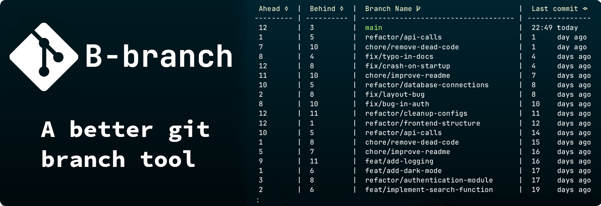

git branch, but make it better 🔧
Download for macOS (Apple Silicon) · Linux (x64) · Windows (x64)


🌿 What is B-branch?
You've been staring at git branch output for years, an
alphabetical wall of names with zero context.
When was this branch last touched? How far behind is it? What was
I even doing here?
B-branch fixes that.
It replaces the blunt git branch command with a rich, structured view that shows you what actually matters: recency, divergence, and description.

🔧 Usage
git bb [<options>] [<additional arguments>]Overview
git bb behaves similarly to git branch,
but provides additional capabilities for filtering, sorting, and
analyzing branches.
Generic Options
-h, --help — Show the help message.
-v, --version — Show the current version.
-q, --quiet — Output only branch names.
Filtering Options
-c, --contains <string> — List branches
containing the string.
-n, --no-contains <string> — Exclude branches
containing the string.
-s, --sort <criterion> — Sort by
date, name, ahead,
behind.
-t, --track <branch> — Show upstream
relationship.
-a, --all — Show local and remote branches.
-r, --remote — Show only remote branches.
-p, --print-top <N> — Show top N branches.
Examples
# List all branches
git bb
# Only remote branches
git bb --remote
# Find branches containing "feature"
git bb --contains feature
# Sort by latest updates
git bb --sort date
# Top 5 ahead branches
git bb --sort ahead --print-top 5
📝 Branch Description
Git supports per-branch description natively... B-branch actually shows them.
# Add a description to the current branch git branch --edit-description
This will open an editor where you can set descriptions for your branches.
[main] This is the description that will show up on the main branch. [development] This development branch is for incoming work.
🖥️ Pager Keybindings
j / k Scroll down / upG / END Jump to bottomg / HOME Jump to top/ Searchn / N Next / previous search result
ESC Clear searchq Quit! Execute shell command💡 Nerd Font
For the full icon experience, install Nerd Font and enable it
git config --global vars.useNerdFonts true
Download
Look through releases on the Release page or download the latest version below!
curl -sSfL https://raw.githubusercontent.com/SimonNyvall/b-branch/main/install.sh | sh
Manual Install
Pre-Installation Cleanup 🧹
Before reinstalling B-branch, follow these steps to remove previous configurations.
-
Delete the
bindirectory:-
Windows: Delete the
b-branchfolder fromC:\Users\<user>\AppData\Local\bin\ - Unix: Run the following command:
sudo rm -rf /usr/local/bin/b-branch -
Windows: Delete the
-
Remove Git Alias:
-
Open the git config file (
~/.gitconfigor%USERPROFILE%\.gitconfig) - Delete the lines for the bb alias
-
Open the git config file (
Manual Install
- Download the binary for your system.
-
Unzip the file:
unzip b-branch-<arch>.zip -
Move the directory to your
bin.
<arch> refers to the
architecture of the downloaded binary.
Windows 🪟
<user> with your
username.
-
Move the folder:
move "C:\b-branch-<arch>" "C:\Users\<user>\AppData\Local\bin\b-branch" -
Link to Git:
git config --global alias.bb '!f() { /c/Users/<user>/AppData/Local/B-branch/CLI.exe "$@"; }; f'
Unix 🐧 🍎
-
Move the directory:
sudo mv b-branch-<arch> /usr/local/bin/b-branch -
Link to Git:
git config --global alias.bb '!bash -c '\''"'/usr/local/bin/b-branch/CLI'" "$@"'\'' bash'
Notes
Designed as a drop-in enhancement for developers working with many branches.
Pager: B-branch uses less as its
pager. The first argument passed to B-branch is expected to be the
path to the less executable. The install script
configures this automatically, but manual installs require
less to be available in your PATH or explicitly
provided.
Filtering: The --contains and
--no-contains options first attempt to interpret input
as a regular expression. If parsing fails, B-branch falls back to a
simple substring match using .NET's string matching.
Sorting: Sorting by ahead or
behind depends on upstream tracking information.
Branches without an upstream may appear last or be omitted depending
on context.
Upstream: Ahead/behind information requires an upstream branch. If none is set, those values will not be shown.
Detached HEAD: When in a detached HEAD state, B-branch may not associate the current state with a branch.
Remote branches: Remote branches are only included
when using --all or --remote. Their
metadata depends on your local fetch state.
Performance: Performance depends on repository size and number of branches. Large repositories or many remotes may take slightly longer to analyze.